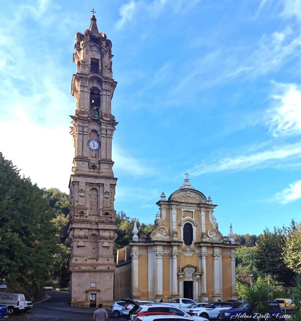

Az 1648 és 1740 között épült Saint-Jean-Baptiste templom a sziget legimpozánsabb és legkifinomultabb barokk egyházi műemléke. Amikor a völgyben kanyargó utak felől megpillantod, szinte hihetetlennek tűnik, hogy egy ilyen apró hegyi falu hogyan volt képes ekkora és ennyire díszes templomot emelni. Az épület titka a Castagniccia régió egykori gazdasági jólétében rejlik: a gesztenyekereskedelemből meggazdagodott helyi közösségek így akarták hirdetni gazdagságukat, valamint a külvilágtól és a genovai elnyomástól független, büszke identitásukat. A templom homlokzatának elegáns, hullámzó vonalai és harmonikus arányai a legszebb észak-olaszországi barokk katedrálisok hangulatát idézik a korzikai vadon közepén.
A templomkomplexum leglátványosabb és legmeghatározóbb eleme a zseniális milánói építész, Domenico Basteri által tervezett, különálló harangtorony (campanile). Ez a monumentális, ötemeletes torony elképesztő, 45 méteres magasságával messze a környező házak és a sűrű erdő lombok fejt fölé tornyosul. Basteri igazi építészeti bravúrt hajtott végre: a torony felfelé haladva egyre kecsesebbé és nyitottabbá válik, köszönhetően a tágas íveknek, a stukkóknak és a finom díszítéseknek. Ez a könnyed, szinte lebegő szerkezet a késő barokk és a rokokó stílus tökéletes fúziója, amely évszázadok óta a belső Korzika legfontosabb tájékozódási pontjaként és jelképeként szolgál.
Belépve a templomba a barokk művészet igazi, drámai, színházszerű világa fogadja a látogatót. A belső tér kialakítása és díszítése azt a célt szolgálta, hogy elkápráztassa és felemelje a hívő embert: a falakat és a mennyezetet gazdag trompe-l’œil freskók, aranyozott stukkók és finoman megmunkált fafaragások borítják. A monumentális főoltár, a míves szószék és a templom akusztikája mind hozzájárulnak ahhoz, hogy a mise ne csak egyházi szertartás, hanem a közösség erejét demonstráló kulturális esemény is legyen. A Saint-Jean-Baptiste templom így válik teljessé: kívülről a természet feletti emberi alkotóerő diadala, belülről pedig a korzikai lélek és hit pazar szentélye.